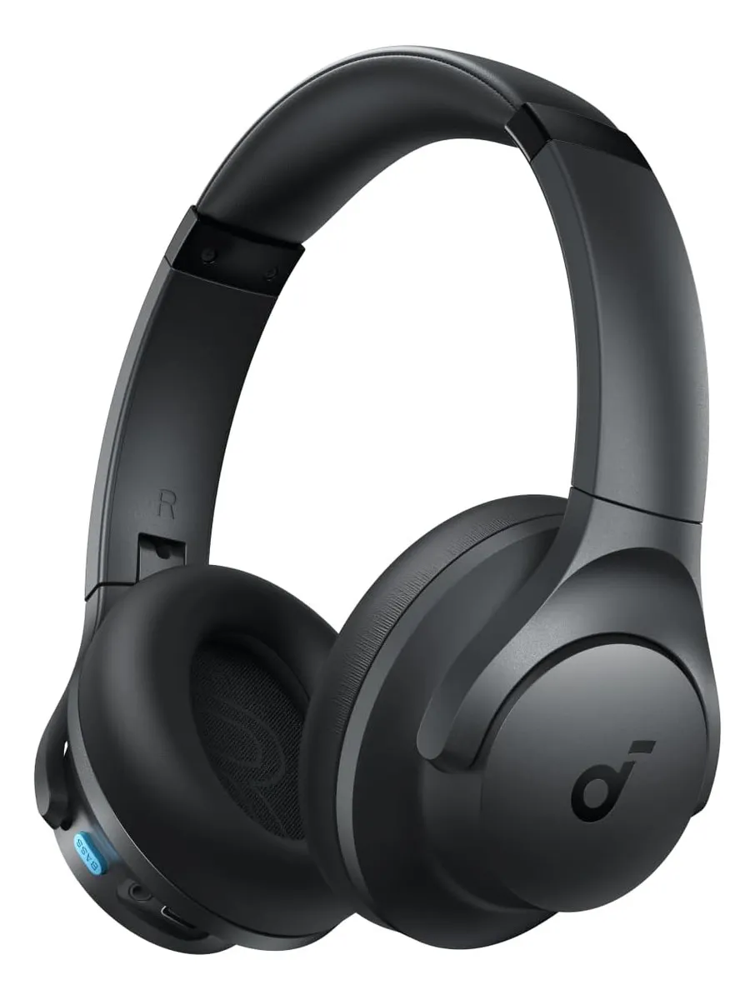
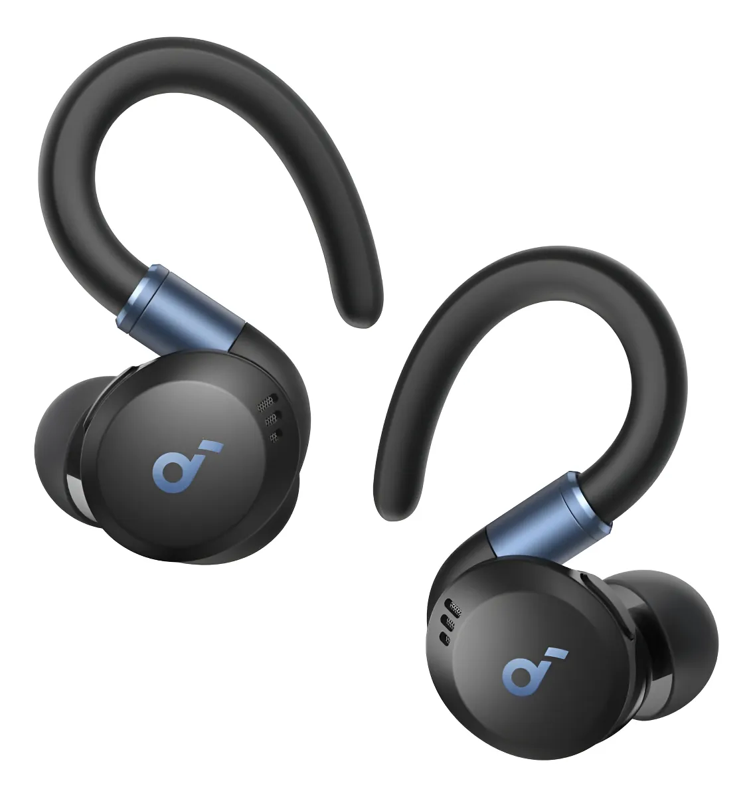
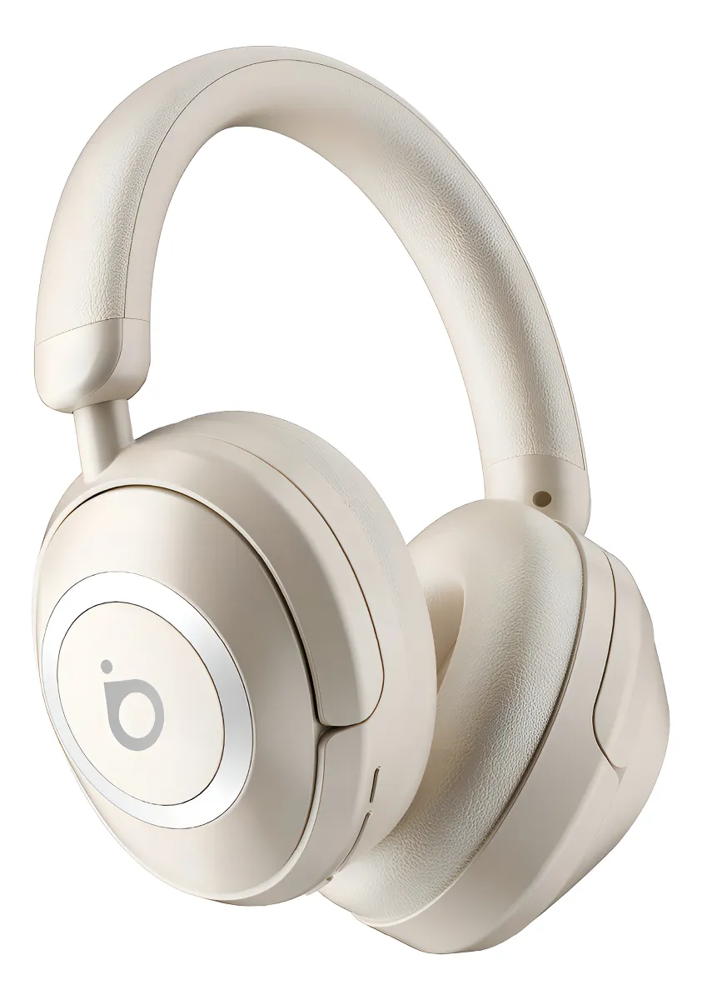
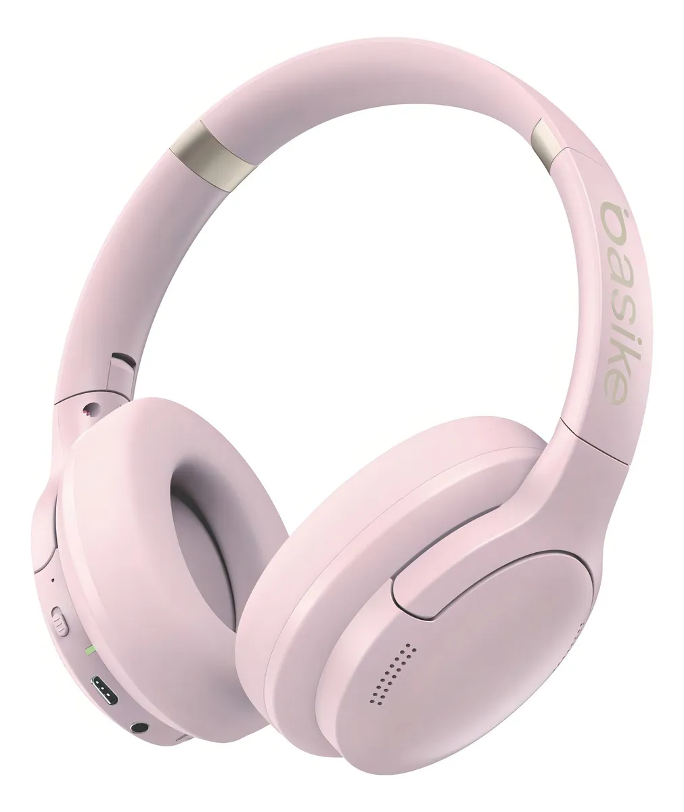
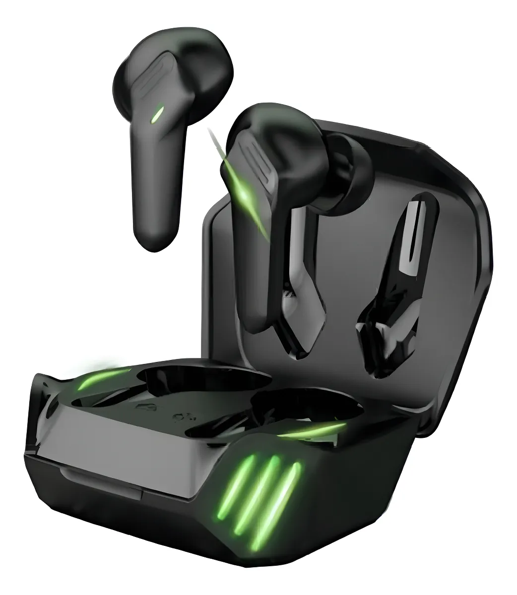
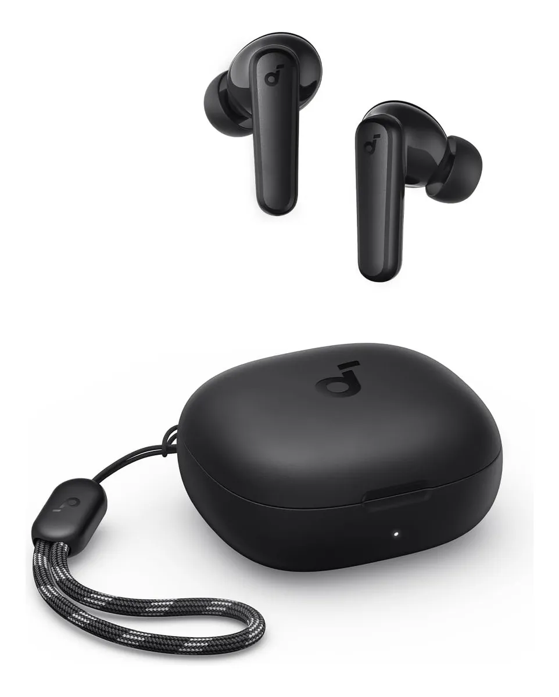
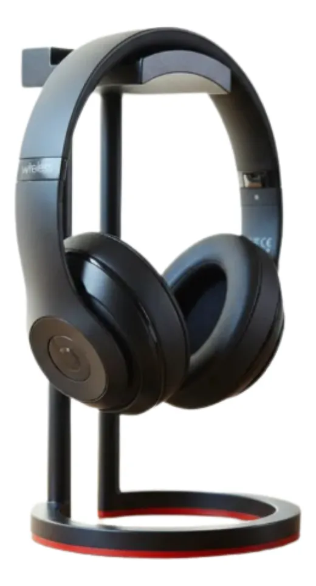
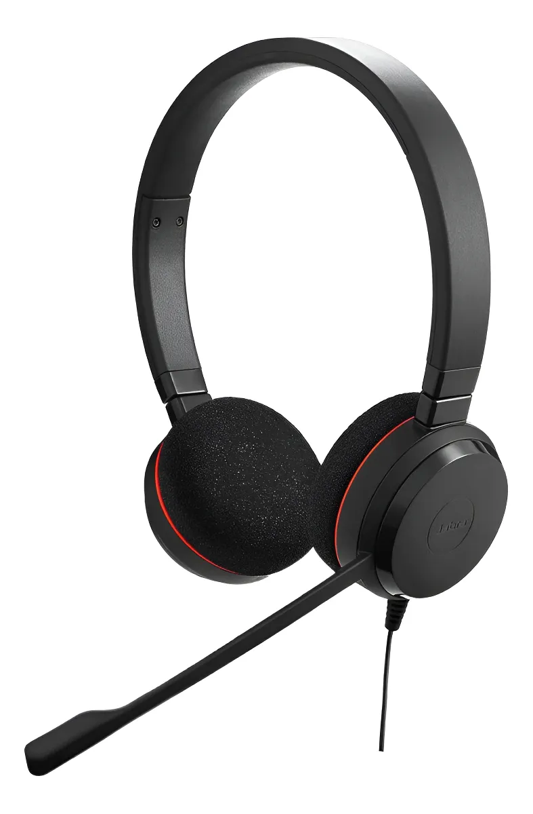
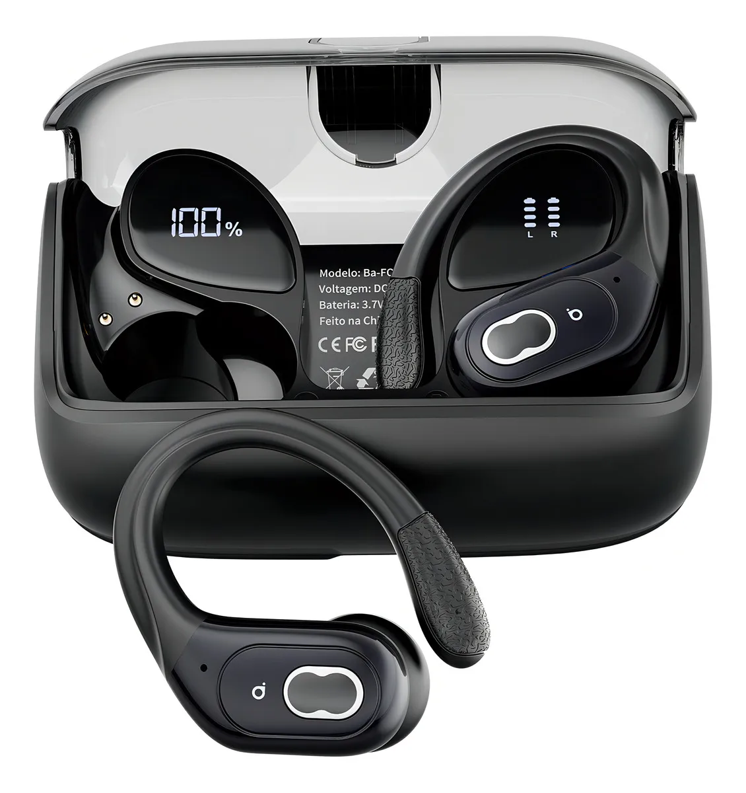

Bluetooth 5.3 multiponto Headphone com 2 mic Cor Cinza 60h bateria graves profundos áudio Hi‑Res 22 EQ e personalização conforto dobrável chamadas claras almofadas destacáveis Soundcore by Anker Q11i
R$ 238,90

Fone de Ouvido Sem Fio para Treinos Soundcore by Anker Sport X20 ANC adaptativo 3.0 Ganchos Ajustáveis Graves Intensos IP68 À Prova de Suor e Poeira 48H de Reprodução Fones para Academia Cor Preto
R$ 484,51

Headset Bluetooth Redução De Ruído Do Anc Com Microfone Enc(Chamada Hd Bluetooth), Fone Bluetooth Gamer, Bateria 30 Horas, Hifi Chamadas Por Bluetooth, Cor Branco Basike Ba-FON113
R$ 163,93

Headset Bluetooth Redução De Ruído Do Anc Hifi Com Microfone Cor Rosa
R$ 157,00

Fone De Ouvido Gamer Sem Fio Bluetooth Tws Kaidi Kd 775 Cor Preto Cor
R$ 65,08

Fone De Ouvido Soundcore by Anker P20i Graves Poderosos e Impactantes Bluetooth 5.3 30H de Reprodução Resistência à Água 2 Mics IA para Chamadas Claras Personalização de Som via App Cor Preto
R$ 166,19

Suporte Mesa Fone De Ouvido 4 Headset Gammer Moderno
R$ 24,90

Headset Fone Jabra Evolve 20 Stereo Ms 4999823109 Usb Cor Black
R$ 297,91
